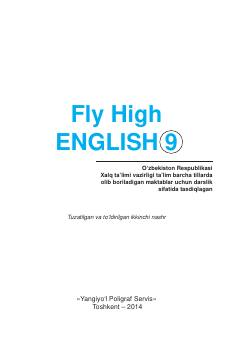

IT9-sinf o'quvchilari uchun mo'ljallangan ingliz tili darsligi.
Ushbu darslik O'zbekiston Respublikasi Xalq ta'limi vazirligi tomonidan umumta'lim maktablarining 9-sinfi uchun tasdiqlangan bo'lib, ingliz tilini bosqichma-bosqich o'rganishga mo'ljallangan. Kitob turli mavzular, muloqot ko'nikmalari, grammatik qoidalar va lug'atlarni o'z ichiga oladi.